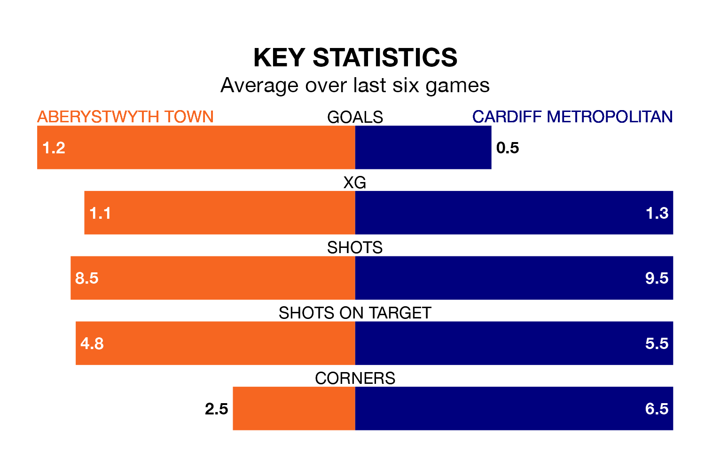

Sunday's early match sees two relegation candidates play each other, as fifth-ranked Aberystwyth Town host sixth-placed Cardiff Metropolitan.
Aberystwyth have picked up 12 points from their first 12 Welsh Premier Women's League games, with three wins and three draws.
That is one point more than Cardiff Metropolitan have collected, having won three and drawn two.
In the last 10 years, Aberystwyth and Cardiff Metropolitan have played each other on nine occasions. Cardiff Metropolitan won eight of them and they drew once.
On average, Aberystwyth scored 0.2 goals and Cardiff Metropolitan 3.4 in those matches.
Their last meeting was on October 8, when they played out a 1-1 draw.
Aberystwyth are in bad form in Welsh Premier Women's League, with one win and a draw from their last six games.
With two wins and four losses over that period, Cardiff Metropolitan's form is slightly better – they have taken six points from 18, compared to Town's four.
With 14 goals in 11 games so far this season, the away side are scoring at below the league average rate with 1.3 goals per game. And they are conceding more than average, letting in 26 goals at a rate of 2.4 per game.
The hosts are also below average scorers, with 1.3 goals per game, compared to a league average of 1.9. They have conceded 1.7 goals per game.
Aberystwyth's last match was on January 14, a 1-1 draw against Pontypridd Town, with getting the goal for Aberystwyth.
Cardiff Metropolitan lost 3-0 against Swansea City last time out, also on January 14.
Updated: 10:02 (UTC), 19/01/24